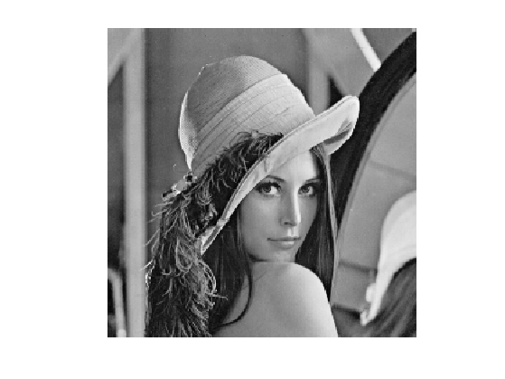
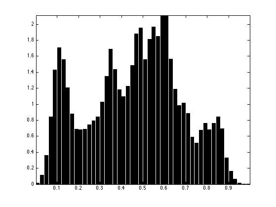
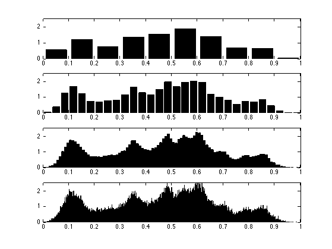
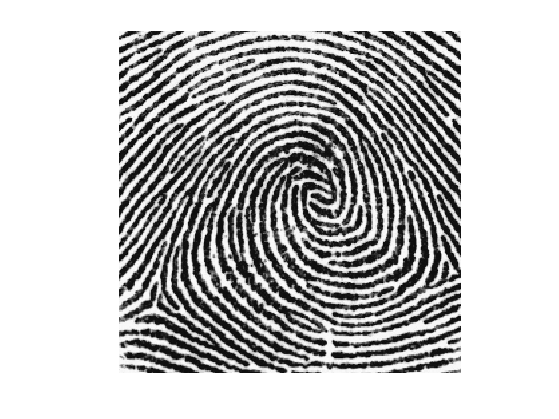
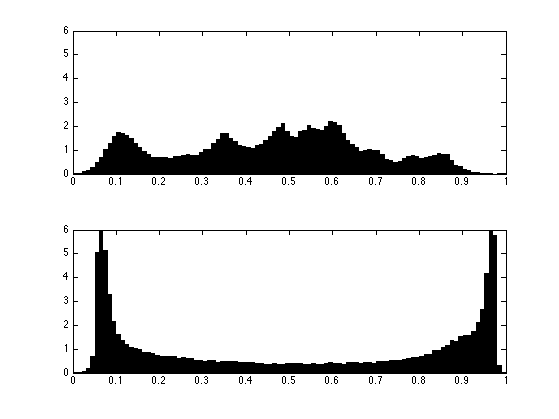
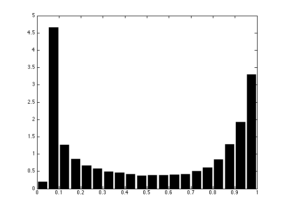
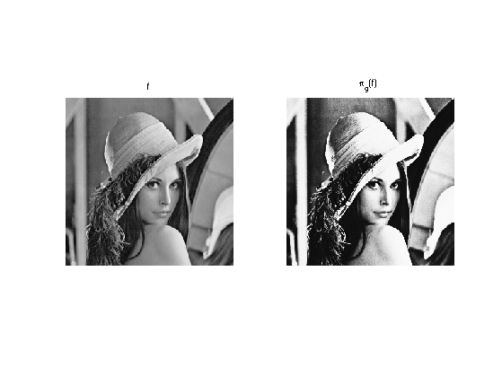
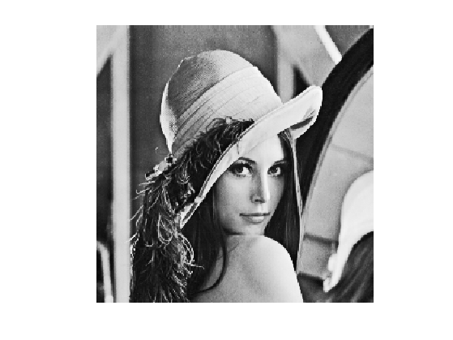
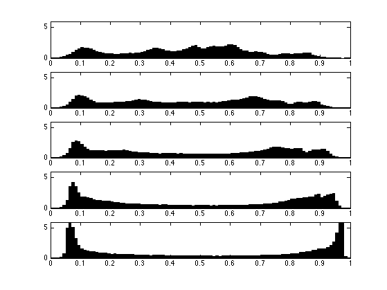

Optimal Transport in 1-D
This tour details the computation of discrete 1-D optimal transport with application to grayscale image histogram manipulations.
Contents
Installing toolboxes and setting up the path.
You need to download the following files: signal toolbox and general toolbox.
You need to unzip these toolboxes in your working directory, so that you have toolbox_signal and toolbox_general in your directory.
For Scilab user: you must replace the Matlab comment '%' by its Scilab counterpart '//'.
Recommandation: You should create a text file named for instance numericaltour.sce (in Scilab) or numericaltour.m (in Matlab) to write all the Scilab/Matlab command you want to execute. Then, simply run exec('numericaltour.sce'); (in Scilab) or numericaltour; (in Matlab) to run the commands.
Execute this line only if you are using Matlab.
getd = @(p)path(p,path); % scilab users must *not* execute this
Then you can add the toolboxes to the path.
getd('toolbox_signal/'); getd('toolbox_general/');
Optimal Transport and Assignement
We consider data \(f \in \RR^{N \times d}\), that can corresponds for instance to an image of \(N\) pixels, with \(d=1\) for grayscale image and \(d=3\) for color image. We denote \(f = (f_i)_{i=1}^N\) with \(f_i \in \RR^d\) the elements of the data.
The discrete (empirical) distribution in \(\RR^d\) associated to this data \(f\) is the sum of Diracs \[ \mu_f = \frac{1}{N} \sum_{i=1}^N \de_{f_i}. \]
An optimal assignement between two such vectors \(f,g \in \RR^{N \times d}\) is a permutation \(\si \in \Si_N\) that minimizes \[ \si^\star \in \uargmin{\si \in \Si_N} \sum_{i=1}^N C(f_i,g_{\si(i)}) \] where \(C(u,v) \in \RR\) is some cost function.
In the following, we consider \(L^p\) costs \[ \forall (u,v) \in \RR^d \times \RR^d, \quad C(u,v) = \norm{u-v}^p \] where \(\norm{\cdot}\) is the Euclidean norm and \(p\geq 1\).
This optimal assignement defines the \(L^p\) Wasserstein distance between the associated point clouds distributions \[ W_p(\mu_f,\mu_g)^p = \sum_{i=1}^N \norm{f_i - g_{\si(i)}}^p = \norm{f - g \circ \si}_p^p \] where \( g \circ \si = (g_{\si(i)})_i \) is the re-ordered points cloud.
Grayscale Image Distribution
We consider here the case \(d=1\), in which case one can compute easily the optimal assignement \(\si^\star\).
Load an image \(f \in \RR^N\) of \(N=n \times n\) pixels.
n = 256;
f = rescale( load_image('lena', n) );
Display it.
clf; imageplot(f);
A convenient way to visualize the distribution \(\mu_f\) is by computing an histogram \( h \in \RR^Q \) composed using \(Q\) bins \( [u_k,u_{k+1}) \). The histogram is computed as \[ \forall k=1,\ldots,Q, \quad h(p) = \abs{\enscond{i}{ f_i \in [u_k,u_{k+1}) }}. \]
Number of bins.
Q = 50;
Compute the histogram.
[h,t] = hist(f(:), Q);
Display this normalized histogram. To make this curve an approximation of a continuous distribution, we normalize \(h\) by \(Q/N\).
clf;
bar(t,h*Q/n^2); axis('tight');
 Exercice 1: (check the solution) Compute and display the histogram of \(f\) for an increasing number of bins.
exo1;
Load another image \(g \in \RR^N\).
g = rescale( mean(load_image('fingerprint', n),3) );
Display it.
clf; imageplot(g);
Exercice 2: (check the solution) Compare the two histograms.
exo2;
1-D Optimal Assignement
For 1-D data, \(d=1\), one can compute explicitely an optimal assignement \(\si^\star \in \Si_N\) for any cost \(C(u,v) = \phi(\abs{u-v})\) where \(\phi : \RR \rightarrow \RR\) is a convex function. This is thus the case for the \(L^p\) optimal transport.
This is obtained by computing two permutations \( \si_f, \si_g \in \Si_N \) that order the values of the data \[ f_{\si_f(1)} \leq f_{\si_f(2)} \leq \ldots f_{\si_f(N)} \] \[ g_{\si_g(1)} \leq g_{\si_g(2)} \leq \ldots g_{\si_g(N)}. \]
An optimal assignement is then optained by assigning, for each \(k\), the index \( i = \si_f(k) \) to the index \( \si_g(k) \), i.e. \[ \si^\star = \si_g \circ \si_f^{-1}\] where \( \si_f^{-1} \) is the inverse permutation, that satisfies \[ \si_f^{-1} \circ \si_f = \text{Id} \].
Note that this optimal assignement \(\si^\star\) is not unique when there are two pixels in \(f\) or \(g\) having the same value.
Compute \(\si_f, \si_g\) in \(O(N \log(N))\) operations using a fast sorting algorithm (e.g. QuickSort).
[~,sigmaf] = sort(f(:)); [~,sigmag] = sort(g(:));
Compute the inverse permutation \(\sigma_f^{-1}\).
sigmafi = []; sigmafi(sigmaf) = 1:n^2;
Compute the optimal permutation \(\sigma^\star\).
sigma = sigmag(sigmafi);
The optimal assignement is used to compute the projection on the set of image having the pixel distribution \(\mu_g\) \[ \Hh_g = \enscond{m \in \RR^N}{ \mu_m = \mu_g }. \] Indeed, for any \( p > 1 \), the \( L^p \) projector on this set \[ \pi_g( f ) = \uargmin{m \in \Hh_g} \norm{ f - m }_p \] is simply obtained by re-ordering the pixels of \(g\) using an optimal assignement \(\si^\star \in \Si_N\) between \(f\) and \(g\), i.e. \[ \pi_g( f ) = g \circ \si^\star. \]
This projection \(\pi_g( f )\) is called the histogram equalization of \(f\) using the histogram of \(g\)
Compute the projection.
f1 = reshape(g(sigma), [n n]);
Check the new histogram.
clf; [h,t] = hist(f1(:), p); bar(t,h*p/n^2);
Compare before/after equalization.
clf; imageplot(f, 'f', 1,2,1); imageplot(f1, '\pi_g(f)', 1,2,2);
Histogram Interpolation
We now introduce the linearly interpolated image \[ \forall t \in [0,1], \quad f_t = (1-t) f + t g \circ \sigma^{\star} .\]
One can show that the distribution \( \mu_{f_t} \) is the geodesic interpolation in the \(L^2\)-Wasserstein space between the two distribution \(\mu_f\) (obtained for \(t=0\)) and \(\mu_g\) (obtained for \(t=1\)).
One can also show that it is the barycenter between the two distributions since it has the following variational characterization \[ \mu_{f_t} = \uargmin{\mu} (1-t)W_2(\mu_f,\mu)^2 + t W_2(\mu_g,\mu)^2 . \]
Define the interpolation operator.
ft = @(t)reshape( t*f1 + (1-t)*f, [n n]);
The midway equalization is obtained for \(t=1/2\).
clf; imageplot(ft(1/2));
Exercice 3: (check the solution) Display the progression of the interpolation of the histograms.
exo3;